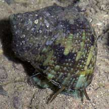
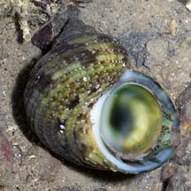
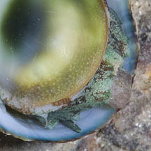
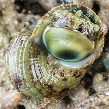
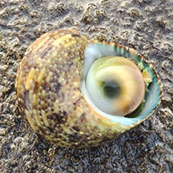
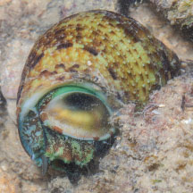
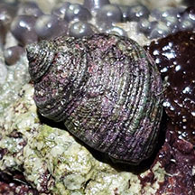
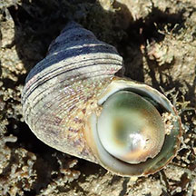

|
|
| shelled snails text index | photo index |
| Phylum Mollusca > Class Gastropoda > Family Turbinidae |
| Ribbed
turban snail Turbo intercostalis Family Turbinidae updated Oct 2016 Where seen? Among the most commonly encountered of our turban snails on our shores, this chubby snail is often seen on rocky shores and under coral rubble near living reefs. There are suggestions that Turbo intercostalis=Turbo ticaonicus=Turbo bruneus. Features: 3-5cm, up to 6cm. Shell thick with many smooth spiral cords. Chalky operculum is hemi-spherical and smooth, dark green centre with yellowish and white margins. There is a fine ridge on the outside of the operculum and perforation in the centre. Sometimes, the operculum of a dead snail is washed ashore. It is sometimes called a 'cat's-eye'. Body greenish with brown mottles, a pair of slender tentacles. Sometimes confused with the Top shell snail (Family Trochidae) has a more pyramidal shell and a thin operculum made of a horn-like material. While the turban shell snail has a shell with more distinct whorls and a thick, chalky operculum. Here's more on how to tell apart turban and top shell snails. |
 Labrador, May 05 |
 |
 |
| Human uses: It is collected for food by coastal dwellers. |
| Ribbed turban snails on Singapore shores |
On wildsingapore
flickr
|
| Other sightings on Singapore shores |
 Pulau Tekukor, Jan 22 Photo shared by Vincent Choo on facebook. |
 Seringat-Kias mangrove lagoon, Sep 25 Photo shared by Mathias Luk g on facebook. |
 Big Sisters, Aug 25 Photo shared by Marcus Ng on facebook. |
 Cyrene, Jul 25 Photo shared by Richard Kuah on facebook. |
 Terumbu Hantu, Jul 20 Photo shared by Shawne Goh on facebook. |
|
Acknowlegement
|